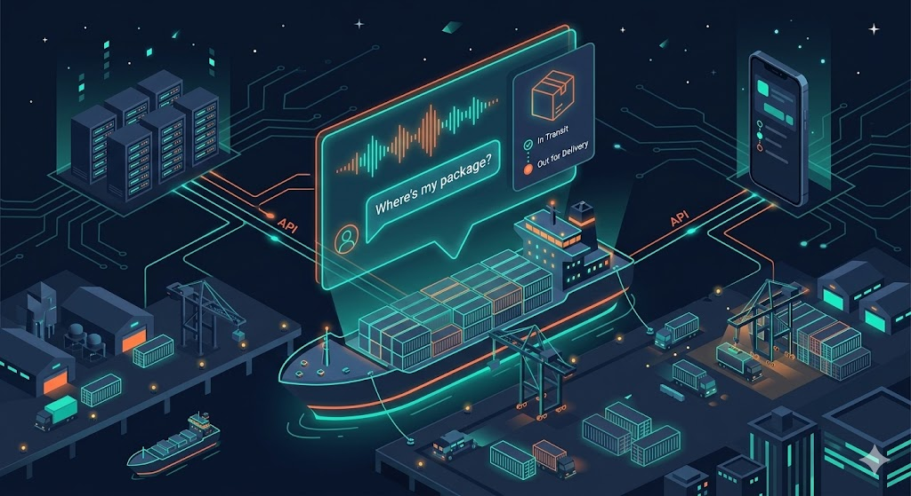
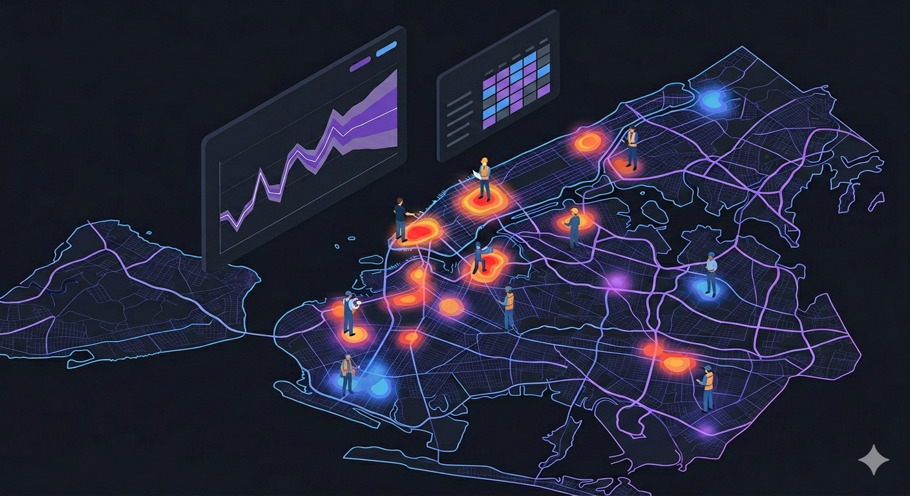
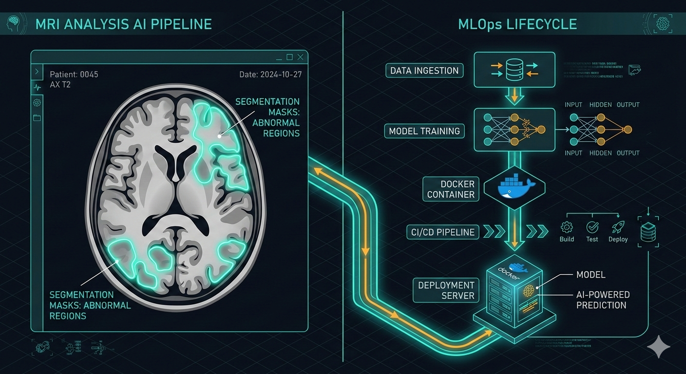

 Captain Cargo - AI Delivery Tracking System Problem: Support teams were spending significant time on repetitive delivery status queries that required no human judgment. Process: Built a voice-first agentic AI assistant workflow using FastAPI, conversational AI via Vapi, and structured order status retrieval backed by a circuit breaker and caching layer. Why: Chose voice + API orchestration to eliminate manual touchpoints entirely, with production safeguards so the system degrades gracefully when dependencies go down. Impact: Converted manual status lookups into a fully automated voice flow achieving 94% eval accuracy and 127ms average latency, with 75 tests covering unit, contract, and integration scenarios. Learn More
 NYC 311 Demand Forecasting & Optimization Problem: Staffing decisions were reactive, creating persistent mismatch between service demand and available teams. Process: Built a forecasting and optimization pipeline using historical 311 request patterns, time-series modeling, and Bayesian optimization to generate capacity recommendations. Why: Chose probabilistic optimization over static thresholds to make staffing plans robust under demand uncertainty, not just accurate on average. Impact: Produced actionable staffing recommendations that reduced both under-allocation risk and resource waste across service demand cycles. Learn More
GenZ AI Therapist Problem: Generic chatbots fail to sustain emotionally safe, context-aware conversations, especially for younger users who need consistency, not just answers. Process: Designed an agentic AI assistant with conversational memory, empathetic tone shaping, RAG-style context retrieval, and guardrail-aware prompting to keep interactions safe and coherent across turns. Why: Prioritized tone consistency and response safety over feature breadth; in mental wellness, trust is the product. Impact: Achieved measurably more coherent multi-turn conversations with near-zero guardrail violations, creating an experience closer to supportive dialogue than a FAQ bot. Learn More
 Brain MRI FLAIR Segmentation Problem: MRI abnormality segmentation workflows were slow and difficult to operationalize end to end. Process: Built a full MLOps pipeline covering data handling, experiment tracking, MobileNetV3-based segmentation, and deployment-ready model serving. Why: Chose a lighter backbone to hit deployable inference speeds on CPU-constrained infrastructure without sacrificing segmentation quality. Impact: Delivered an end-to-end pipeline capable of running inference without GPU dependency, closing the gap between research prototype and clinical deployment readiness. Learn More
1. Problem Framing Before writing a single line of code, I map success metrics, constraints, and stakeholder tradeoffs to make sure we're solving the right problem. Business Goal Mapping Metric Definition Risk Analysis
2. Experimentation I run structured experiments - baselines, ablations, and offline evals - to validate design decisions with evidence before committing to an architecture. Rapid Prototyping Offline Eval Ablation Studies
3. Productionization I ship with observability, fallback behavior, and test coverage built in - because a model that can't be monitored or recovered from failure isn't production-ready. MLOps Monitoring Reliability
Advancing Ischemic Stroke Diagnosis: A Novel Two-Stage Approach for Blood Clot Origin Identification Koushik Sivarama Krishnan, PJ Nikesh, S Gnanasekar, Karthik Sivarama Krishnan arXiv 2023 Cited by 0 Krishnan, K. S., Nikesh, P. J., Gnanasekar, S., & Krishnan, K. S. (2023). Advancing Ischemic Stroke Diagnosis: A Novel Two-Stage Approach for Blood Clot Origin Identification. Cite ArXiv Scholar
Mfaan: unveiling audio deepfakes with a multi-feature authenticity network Koushik Sivarama Krishnan, Karthik Sivarama Krishnan SPCOM 2023 Cited by 12 Krishnan, K. S., & Krishnan, K. S. (2023). Mfaan: unveiling audio deepfakes with a multi-feature authenticity network. Cite Scholar
Benchmarking Conventional Vision Models on Neuromorphic Fall Detection and Action Recognition Dataset Koushik Sivarama Krishnan, Karthik Sivarama Krishnan CCWC 2022 Cited by 12 @INPROCEEDINGS{9720737, author={Krishnan, Karthik Sivarama and Krishnan, Koushik Sivarama}, booktitle={2022 IEEE 12th Annual Computing and Communication Workshop and Conference (CCWC)}, title={Benchmarking Conventional Vision Models on Neuromorphic Fall Detection and Action Recognition Dataset}, year={2022}, pages={0518-0523}, doi={10.1109/CCWC54503.2022.9720737}} Cite ArXiv IEEE Scholar
Efficient Super-Resolution For Chest X-rays Koushik Sivarama Krishnan, Karthik Sivarama Krishnan Acta Scientific Computer Sciences 2022 Cited by 6 Krishnan, K. S., & Krishnan, K. S. (2022). Efficient Super-Resolution For Chest X-rays. Acta Scientific Computer Sciences, 4(6). Cite Scholar
Vision Transformer based COVID-19 Detection using Chest X-rays Koushik Sivarama Krishnan, Karthik Sivarama Krishnan ISPCC 2021 Cited by 98 @INPROCEEDINGS{9609375, author={Krishnan, Koushik Sivarama and Krishnan, Karthik Sivarama}, booktitle={2021 6th International Conference on Signal Processing, Computing and Control (ISPCC)}, title={Vision Transformer based COVID-19 Detection using Chest X-rays}, year={2021}, pages={644-648}, doi={10.1109/ISPCC53510.2021.9609375}} Cite ArXiv IEEE Scholar
SwiftSRGAN - Rethinking Super-Resolution for Efficient and Real-time Inference Koushik Sivarama Krishnan, Karthik Sivarama Krishnan ICICyTA 2021 Cited by 18 @INPROCEEDINGS{9689188, author={Krishnan, Koushik Sivarama and Krishnan, Karthik Sivarama}, booktitle={2021 International Conference on Intelligent Cybernetics Technology Applications (ICICyTA)}, title={SwiftSRGAN - Rethinking Super-Resolution for Efficient and Real-time Inference}, year={2021}, pages={46-51}, doi={10.1109/ICICyTA53712.2021.9689188}} Cite ArXiv IEEE Scholar